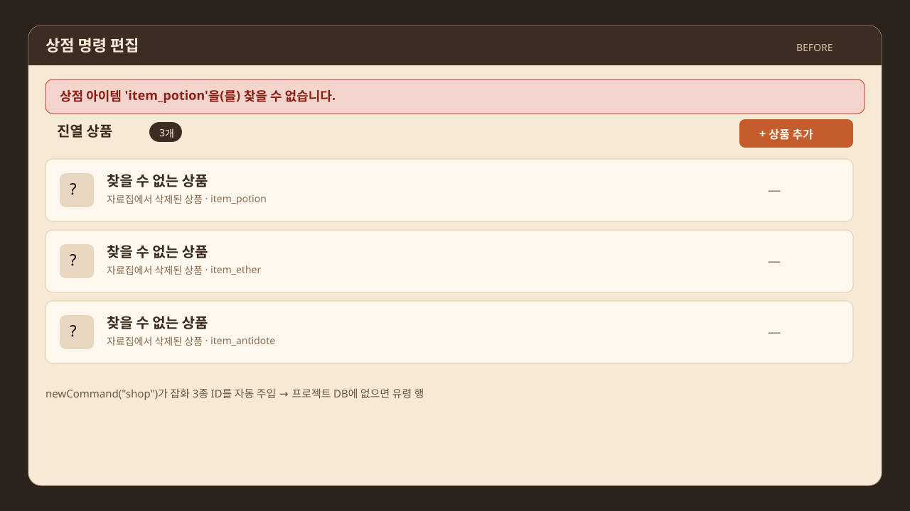
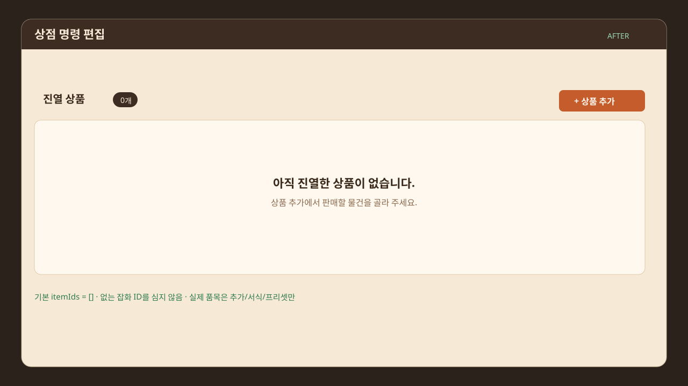
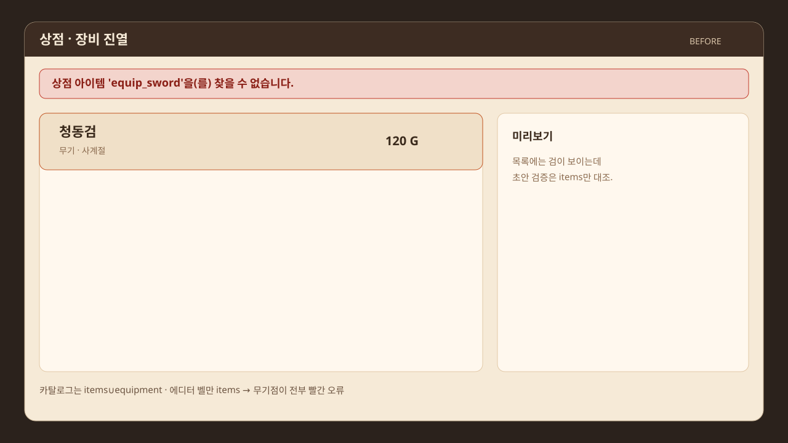
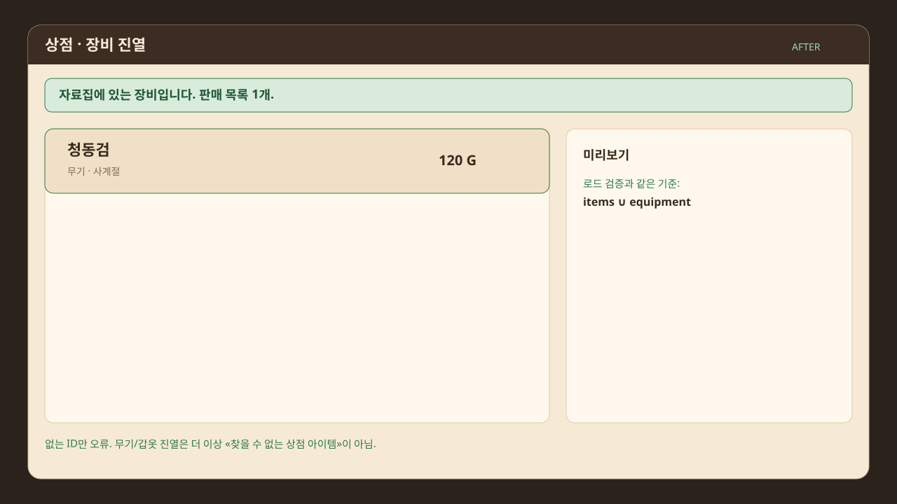

이벤트 에디터가 없는 잡화 ID를 자동 주입하던 것과, 장비를 «찾을 수 없는 상점 아이템»으로 찍던 초안 검증을 고쳤다.

before-missing-goods.svg · newCommand("shop")가 item_potion / item_ether / item_antidote를 자동 주입. DB에 없으면 «찾을 수 없는 상품».
after-empty-listing.svg · 기본 itemIds: []. 실제 품목은 상품 추가·잡화점 프리셋·빈 이벤트 상점 서식만 채운다.
before-equipment-false-missing.svg · 목록에는 청동검이 있는데 벨만 상점 아이템 'equip_sword'을(를) 찾을 수 없습니다. (items만 대조)
after-equipment-accepted.svg · 로드 검증과 같이 items ∪ equipment. 없는 ID만 오류.eventCommandFactory 상점 기본값을 다시 빈 목록으로. defaultShopItemIds() 삭제. 잡화점 프리셋 버튼은 그대로 — 카탈로그에 있는 ID만 고른다.
eventDraftValidator 상점 참조를 refs.items만이 아니라 장비 집합과 합친다. 진짜로 양쪽 다 없는 ID는 기존처럼 상점 아이템 '…'을(를) 찾을 수 없습니다.
| 명령 | 결과 |
|---|---|
vitest 6파일 / 53테스트eventDraftValidator, quickAuthoringSurface, shopProcessingCommand, shopMerchantGold, shopCommandBodyUx, eventEditorValidationBell | 53 passed |
새 상점 itemIds | [] |
| 장비 ID 진열 | reference.item.missing 없음 |
없는 ID item_does_not_exist | 기존 오류 유지 |